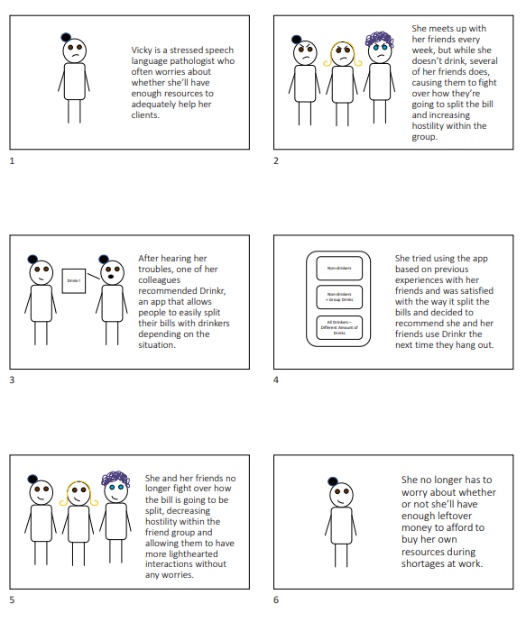
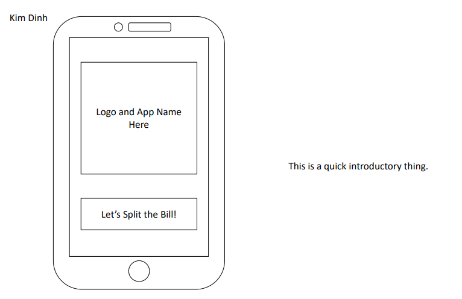
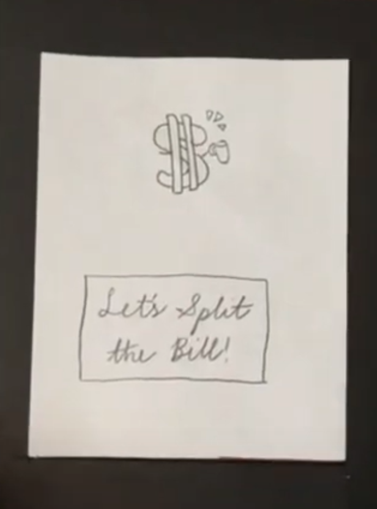

Problem Statement: Bill Splitting with Drinkers

Our users are frustrated when attempting to split the bill between drinkers and nondrinkers. Drinkers may take advantage of bill splitting to buy multiple drinks causing a split of the bill to be unfair. Our solution would provide users with an easy way to split the bill without taking drinks into consideration.
Affinity Diagram: Bill Splitting with Drinkers

To begin our problem solving process, we created an affinity diagram that consists of different categories related to splitting the bill with drinkers, such as the type of establishment, how the drinks were bought, the types of drinkers there were, and common problems when splitting bills. This will grant us better understanding of our problem, leading to a better solution.
Persona: Vicky C. Woodyard

To gain a better understanding of what type of people may use our app, we created personas of different backgrounds.
Storyboard: Vicky C. Woodyard
We storyboarded different scenarios in which a person may use the bill splitting app.
Sketches
We created different sketches of how the app may look.
Paper Prototype
A paper walkthrough of every screen of the app was created to get an idea of how it would work.
Paper Prototype

A paper walkthrough of every screen of the app was created to get an idea of how it would work.